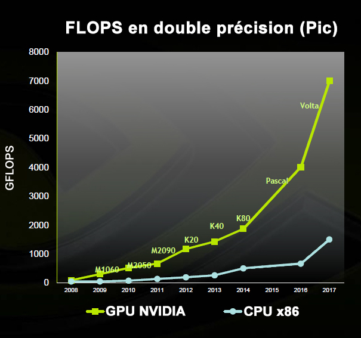

Towards standardization?
10% of the world's GDP in 2025 will come from activities using the blockchain.
Ravi Jhawar, project manager within the Anec GIE (economic interest group)
Regulation through standardization
Luxembourg, through the Ilnas, is participating in the creation of an international technical standard to regulate the blockchain.
Dans un livre blanc, the organization hopes to initiate a process and establish itself as a regulatory actor through an ISO standard.
The objective is to provide a framework for blockchain governance in order to influence the economic and ecological issues that concern it.
This standardization is confronted with the desire for independence and decentralization, the founding foundation of Blockchain technologies.
Nevertheless, the implementation of a standard may imply better energy regulation by imposing, for example, the renewable origin of the electricity needed for the technology to operate.
Standardization to fight against consumption and obsolescence of means of production.
The field for reducing the blockchain's energy consumption can be seen when we talk about standardization or normalization.
These are the standardization of algorithms and the standardization of multi-purpose hardware.
These two optimization directions are in fact only one and the same way: an algorithmic standard means an adapted dedicated hardware, and therefore a more important optimization because the Research & Development investments would be focused on a single type of hardware.
The blockchains running on the work proof method have in common the use of a hash algorithm. The one in Bitcoin is called Hashcash.
By seeking a more economical algorithm to perform this function, the blockchain could see its ecological cost reduced and present itself as a viable alternative on a large scale.
In order to undermine, individuals or institutions provide equipment to perform calculations.
On some blockchains, such as Bitcoin, it is useless and unprofitable to try it with conventional equipment.
This method of calculation is reserved for more recent blockchains or those with less enthusiasm.
Professional miners use high-performance equipment, which excludes amateur miners from the pay race, as part of proof of work only. They are indeed far too slow to validate the transactions against these sprinters.
Mining is divided into two technologies, dedicated chips: FPGA / ASICS and generalist chips CPU / GPU.
Acronyms explanation:
| Acronyme | Explication |
|---|---|
| CPU | Central processing unit ( Unité centrale de traitement ) |
| GPU | Graphics Processing Unit ( Processeur graphique ) |
| ASICS | Application Specific Integrated Circuit ( Circuit intégré spécifique à l'application ) |
| FPGA | Field-Programmable Gate Array ( Réseau de portes programmables in situ ) |
The former are only used in cryptographic calculation as part of the blockchain, the latter are used in everyday operations.
ASICS AND FPGA miners are mainly used in the SHA256 (Bitcoin) calculation, while CPU / GPU are used on more recent cryptometers.
In order to maintain the complexity of calculation within a blockchain, the difficulty must increase as technology advances.
When we look at the capabilities of computation chips, we see a significant increase in their power. Thus, performing a cryptographic calculation considered complex in the 1980s takes a few seconds with a current mobile phone.
This diagram shows the increase in computing power of CPU chips.
 >
>
Evolution of computer computing power and hardware complexity according to Moore's assumptions
When we compare the increase in computing power of GPUs compared to CPUs, we can easily imagine the increase in complexity that algorithms have undergone.
 >
Comparison between the number of floating point operations per second (FLOPS) of CPUs (X86 architecture) and NVIDIA GPUs
On the latter illustration, we can see that the computing power of GPUs on some transactions is spectacularly higher than CPUs, yet, in the context of the blockchain, ASICS AND FPGA miners are much more efficient than GPUs.
Other constraints are also based on the choice of hardware, which is why some algorithms requiring a large amount of memory use made ASICS minors uncompetitive because memory components are particularly expensive.
But 2017 marked a turning point in the use of these cards with a substantial improvement in these memory modules. The solution to maintain complexity was to modify the algorithms, making the hardware obsolete because the functions of an ASICS miner are engraved on the silicon. This is referred to as wired functions.
These wired functions are found in other chip architectures, such as GPUs.
An important economic and ecological cost to guarantee the safety and scalability of these blockchains.
To understand why chips are rendered obsolete, it must be understood that the difference between a CPU and an ASIC (or between a CPU and a GPU) lies in the fact that the CPU is a programmable chip, and has great versatility in its use at the price of lower performance.
A GPU or ASIC is a specialized chip, whose performance is excellent in performing the tasks for which it is programmed, but which are fewer in number than for a CPU.
For example, for a GPU specialized in graphic representation, the display of a textured 3D mesh at 60-100 frames per second.
This performance allows for better gross calculation performance on these precise tasks, but also lower power consumption.
This improvement in performance is made possible by engraving directly into the silicon of the chip the functions necessary for translation, rotation, etc. This is called "wiring" the functions.
For an ASIC minor, this specialization will result in an unbeatable performance in the resolution of an encryption algorithm for example. But it is not possible to use an ASIC specialized in the calculation of SHA256 hashes for KECCAK and vice versa.
In these trends, an intermediate solution has emerged that exploits the best of both worlds: the FPGA.
FPGA.
FPGAs (Field-Programmable Gate Arrays) are reprogrammable silicon integrated circuits.
Reprogramming an FPGA is about redefining the integrated circuit itself to implement the desired functionality, rather than running a software application.
The FPGA can be seen as a chip that simulates a specialized chip at the lowest level.
FPGAs are particularly used to simulate an ASIC miner in the pre-production phase to test the model and adjust logical schemas. When the operation is considered sufficient, the schematic is then frozen to produce an ASIC minor.
FPGA miners offer slightly lower performance than ASICS miners. It is also noted that the programming logic of an fpga requires advanced and uncommon skills.
Despite these disadvantages, FPGA boards with titanic computing capabilities are being developed to meet the needs of machine learning and deep learning.
These cards make it possible to envisage a continuity of future use despite forks and changes in algorithms, which makes it possible to limit costs and limit the ecological impact due to the obsolescence of the equipment.
Standardization through the cabling of functions
To understand how cards dedicated to the blockchain could emerge, it is necessary to go back in time in the history of computing. Originally, only CPUs performed calculations related to 3D. Then came the GPUs, whose wired functions allowed for greater performance. It is quite possible to cable the functions necessary for the algorithms implemented in the blockchain, in the same way as the Physics Processing Unit, which implemented an additional card for physics management and which are now integrated into Nvidia graphics cards.
At present, blockchains are optimized according to the available equipment, they adapt to equipment that is only slightly optimized for this use. This optimization could be done using function cabling, but for this to happen, manufacturers must be able to anticipate the future of the blockchain in order to predict long-term gains.
Today, these are evolving rapidly and many implementations are diverging, all of which push back the hardware optimization step.
This step could be facilitated by the standardization of blockchains.